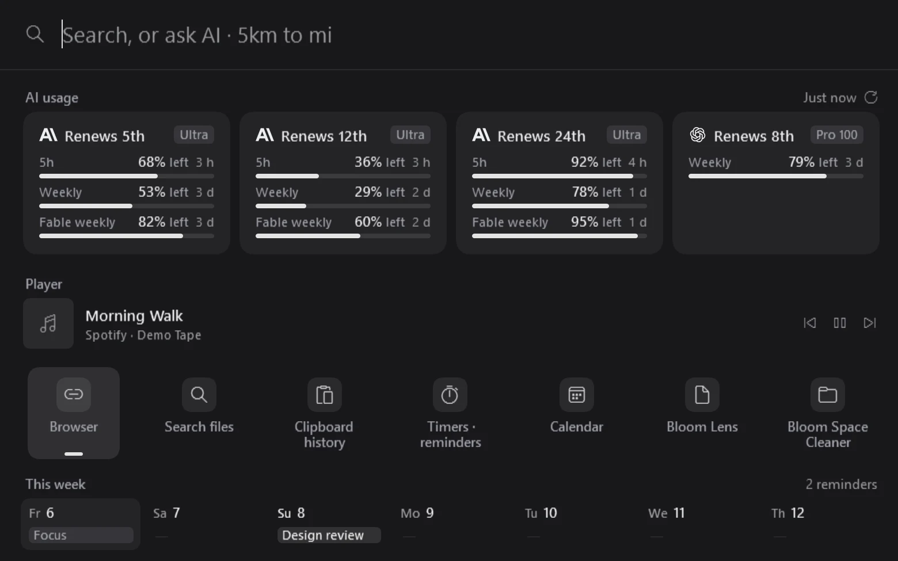

Bloom
BloomOne key,
one search line.
A free launcher for Windows.
Apps, files, maths and AI from one line.

Schedule a meeting Fri 3 PM
Ask AIClaude · SonnetTab
BloomA free launcher for Windows.
Apps, files, maths and AI from one line.
